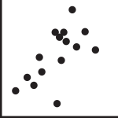
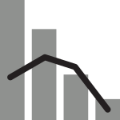
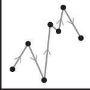

Communication¶
Introduction….
Define your goal: Why are you communicating your analysis?
give insight
inform on the topic
engage people in taking action
Identify your target audience: To whom you are delivering your communication?
cluster partners
affected population
HCT
donors
host government
Choose the right communication media: How do yoyu reach your audience?
reports
profiles
interactive exploratory dasboards
infographic
video
social media
events
Work on your message: What do you want to communicate?
background
supporting details
results/conclusions
bottom line
so what
Tip
Tell a story
Choose hooks for your audience
Say it visually
Be transparent
How to talk about numbers¶
…
Data Visualization¶
…
Choosing the right charts¶
When visualising your data, the choice of chart depends on the quantity and type of data you want to respresent; the relationships in that data, and ultimately, whether or not the graph clearly communicates your message.1
The following is pseudo-decision tree, to support choosing the most appropriate chart type depending on your data and it relationships.
Deviation¶
Emphasise variations (+/-) from a fixed reference point. Typically the reference point is zero but it can also be a target or a long-term average. Can also be used to show sentiment (positive/neutral/negative).
Examples: Showing the number of people entering or exiting a site over a period of time. Showing satisfaction with a component in a training. Demographics pyramid in a site, showing popuation breakdown by age and gender.
Diverging bar: A simple standard bar chart that can handle both negative and positive magnitude values.
Diverging bar: Perfect for presenting survey results which involve sentiment (eg disagree/neutral/agree).
Spine: Splits a single value into two contrasting components (eg male/female).
Surplus/deficit filled line: The shaded area of these charts allows a balance to be shown – either against a
baseline or between two series.
Corellation¶
Show the relationship between two or more variables. Be mindful that, unless you tell them otherwise, many readers will assume the relationships you show them to be causal (i.e. one causes the other).
Examples: Showing the relationships between areas of origin and current location of displacement.

Scatterplot: The standard way to show the relationship between two continuous variables, each of which has its own axis.

Column + line timeline: A good way of showing the relationship between an amount (columns) and a rate (line).

Connected scatterplot: Usually used to show how the relationship between 2 variables has changed over time.
Bubble: Like a scatterplot, but adds additional detail by sizing the circles according to a third variable.
XY heatmap: A good way of showing the patterns between 2 categories of data, less effective at showing fine differences in amounts.
Ranking¶
Use where an item’s position in an ordered list is more important than its absolute or relative value. Don’t be afraid to highlight the points of interest.
Examples: Comparing indicaotrs of need. Comparing displacement population figures across sites or districts.
Distribution¶
Show values in a dataset and how often they occur. The shape (or ‘skew’) of a distribution can be a memorable way of highlighting the lack of uniformity or equality in the data.
Examples:
Change over time¶
Give emphasis to changing trends. These can be short (intra-day) movements or extended series traversing decades or centuries: Choosing the correct time period is important to provide suitable context for the reader.
Examples:
Magnitude¶
Show size comparisons. These can be relative (just being able to see larger/bigger) or absolute (need to see fine differences). Usually these show a ‘counted’ number (for example, barrels, dollars or people) rather than a calculated rate or per cent.
Examples:
Part-to-whole¶
Show how a single entity can be broken down into its component elements. If the reader’s interest is solely in the size of the components, consider a magnitude-type chart instead.
Examples:
Spatial¶
Aside from locator maps only used when precise locations or geographical patterns in data are more important to the reader than anything else.
Examples:
Flow¶
Show the reader volumes or intensity of movement between two or more states or conditions. These might be logical sequences or geographical locations.
Examples:
Visual Design Principles¶
Developed by German psychologists, the Gestalt laws describe how we interpret the complex world around us. They explain why a series of flashing lights appear to be moving. And why we read a sentence like this, notli ket his ort hat. Understanding these “laws” can be useful in making sure your message is being coveyed effectively.
Law of Similarity.¶
…
Law of Pragnanz¶
…
Law of Proximity¶
…
Law of Continuity¶
…
Law of Closure¶
…
Law of Common Region¶
…
Use of Colour¶
When choosing colours in your charts its important to understand possible local significance that may be associated to a specific colour. For instance, in one country a colour may signify good luck, whereas in a different country, the same colour could be associated with a non-state armed group.
Where possible, special attention should be taken to ensure that chart remain readible when printed in grayscale and that they are colour blind safe, meaning that the chart should not be confusing for people with red-green colour blindness (an estimated 8% of men and 0.4% of women).
Adding to the discussion on the use of colour in the previous section, the use of colour in scales, particularly maps, typically takes one of the following three forms. 1. Countinous scales 2. Diverging scales 3. Categorical scales
- 1
Adapted from the FTs Visual Vocabulary. A similar graphics decision tree, based on the type and number of variables, is available at Data-to-Viz.com